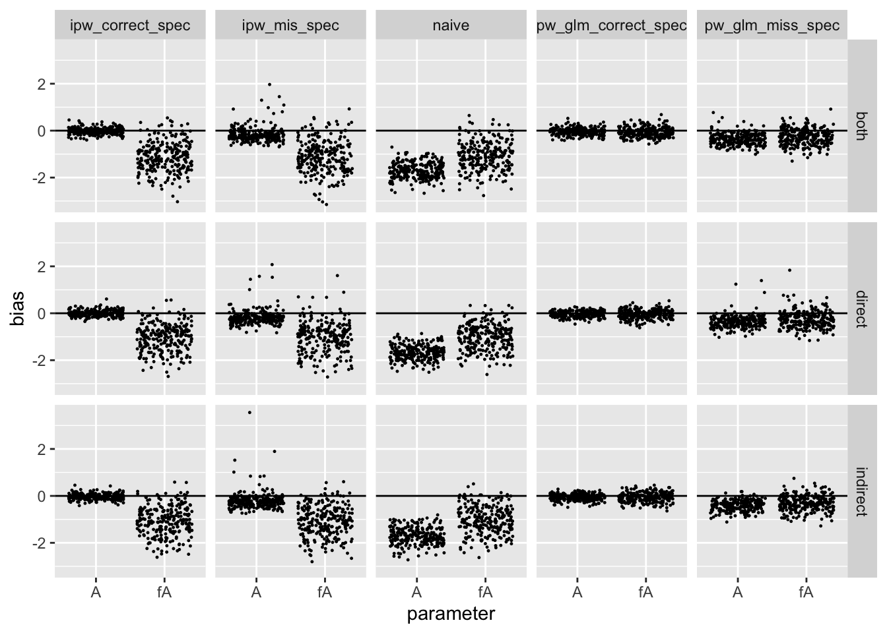

One of my (many) side projects is estimating the effect of land conservation on outcomes such as deforestation. This is an exciting collaboration with Christophe Nolte at Boston University. I decided to use this project as an opportunity to refresh my knowledge on causal inference with interference (Hudgens and Halloran 2008) as well as take a closer look at several interesting articles that came across my desk. In this post, I try out the estimation framework in one of those articles and explore how it may be useful in the presence of interference.
Equation (2) in Arbour, Dimmery, and Sondhi (2020) expresses an estimand I’m all too familiar with in a way I had not seen previously
\(E\left[\frac{y_i \Pr(\mathbb{a}_i)}{\Pr(\mathbb{a}_i | \mathbb{x}_i)}\right] = E\left[\frac{y_i \Pr(\mathbb{a}_i) \Pr(\mathbb{x}_i)}{\Pr(\mathbb{a}_i, \mathbb{x}_i)}\right]\)
The left hand quantity is the standard (stabilized) inverse probability estimand, and this equals the right hand side simply by the definition of conditional probability: \(\Pr(A|X) = \Pr(A,X)/\Pr(X)\). In itself this identity seems interesting but trivial, but Arbour, Dimmery, and Sondhi (2020) show how one can estimate the ratio of the product density (\(\Pr(A) \Pr(X)\)) and the joint density (\(\Pr(A, X)\)) using methods of density ratio estimation. This opens up a powerful (and new to me) way to estimate causal quantities.
An obvious problem is that the observed data is a good stand-in for the joint density, but how does one get the product density. The trick is to permute treatment assignment, which breaks the dependence between \(A\) and \(X\).
In this post, I create a toy interference simulation and look at the operating characteristics of the permutation weighting approach.
The toy simulation is similar to Liu et al. (2019) with the exception that the interference structure based on network adjacency of units rather than groups of units (i.e. partial interference). I also include an extra covariate that introduces confounding between units.
max_degree.library(magrittr)
# Generate adjacency matrix for `n` units with a maximum of `max_degree` edges for
# any given vertex.
gen_edges <- function(n, max_degree){
sample.int(max_degree, size = n, replace = TRUE) %>%
{
# sum(out.deg) must be even for sample_degseg
x <- .
x[1] <- `if`(
(sum(x) %% 2) != 0,
x[1] + 1,
x[1]
)
x
} %>%
igraph::sample_degseq(method = "simple.no.multiple") %>%
igraph::simplify() %>%
igraph::get.adjacency()
}
# Generate data
gen_data <- function(edges, gamma, beta){
n <- nrow(edges)
dplyr::tibble(
# Number of connections
m_i = as.numeric(edges %*% rep(1, n)),
# Correctly specified
Z1 = rnorm(n, sd = 1),
Z1_abs = abs(Z1),
Z2 = rbinom(n, size = 1, prob = .5),
Z3 = as.numeric(edges %*% Z1_abs),
# Misspecified
X1 = exp(Z1/2),
X2 = plogis(Z2) * Z1,
X3 = exp(Z3/2),
Alp = as.numeric(cbind(1, Z1_abs, Z2, Z1_abs*Z2, Z3) %*% gamma),
p = plogis(Alp),
A = rbinom(n, size = 1, prob = p),
# Number of treated neighbors
A_n = as.numeric(edges %*% A),
# Proportion of neighbors treated
fA = A_n/m_i,
Ylp = cbind(1, A, fA, Z1_abs, Z2, Z1_abs*Z2, Z3) %*% beta,
Y = rnorm(n, mean = Ylp, sd = 1)
) ->
out
list(
data = out,
edges = edges
)
}My goal is to recover the causal direct effect \(\beta_1\) and the spillover effect (\(\beta_2\)) using various weighting techniques on the following marginal structural model:
\[ E[Y(a, f(\tilde{a}))] = \theta_0 + \theta_1 a + \theta_2 f(\tilde{a}), \]
which under standard causal identifiability assumptions \(\theta_1 = \beta_1\) and \(\theta_2 = \beta_2\).
I’ll try:
I’ll also see how these estimators perform under mispecification of the functional form of the covariates. I’m just going to examine the bias of these estimators in this post. My hypotheses, based on the results in Arbour, Dimmery, and Sondhi (2020), are:
naivimator <- function(simdata){
lm(Y ~ A + fA, data = simdata[["data"]], weights = NULL)
}make_ipw_mator <- function(pformula = ~ Z1_abs*Z2 + Z3){
function(simdata){
df <- simdata[["data"]]
m <- glm(update(A ~ ., pformula), data = df, family = binomial)
nu <- dbinom(df[["A"]], size = 1, prob = mean(df[["A"]]))
de <- dbinom(df[["A"]], size = 1,
prob = predict(m, newdata = df, type = "response"))
lm(Y ~ A + fA, data = df, weights = nu/de)
}
}Below are my quick and dirty functions used to carry out permutation weighting:
# Permutes the treatment vector and recomputes the proportion of neighbors
# treated.
permute_A <- function(simdt){
permutation <- sample.int(nrow(simdt[["data"]]), replace = FALSE)
simdt[["data"]] %>%
dplyr::mutate(
A = A[permutation],
A_n = as.numeric(simdt[["edges"]] %*% A),
fA = A_n/m_i,
)
}
# Stack the observed data with the permuted data
permute_and_stack <- function(simdt){
dplyr::bind_rows(
dplyr::mutate(simdt[["data"]], C = 0),
dplyr::mutate(permute_A(simdt), C = 1)
)
}
# Estimate the density ratio by modeling whether an observation is from
# the permuted dataset or original dataset
.pw <- function(simdt, rhs_formula, fitter){
m <- fitter(formula = update(C ~ 1, rhs_formula),
data = permute_and_stack(simdt))
w <- predict(object = m, newdata = simdt[["data"]], type = "response")
w/(1 - w)
}
# Estimate permutation weights B times and average the results
get_permutation_weights <- function(simdt, B, rhs_formula, fitter){
replicate(
n = B,
expr = .pw(simdt, rhs_formula = rhs_formula, fitter = fitter)
) %>%
apply(1, mean)
}
# Estimate weights by GLM
glm_fitter <- function(formula, data){
glm(formula = formula, data = data, family = binomial)
}
# Create a permutation weighted estimator for the marginal structural model
make_pw_estimator <- function(fitter, rhs_formula, B){
function(simdata){
w <- get_permutation_weights(simdt = simdata,
B = B, rhs_formula = rhs_formula, fitter = fitter)
lm(Y ~ A + fA,
data = simdata[["data"]],
weights = w)
}
}I run the simulation 250 times for \(n = 1000\) units for a single fixed adjacency matrix. For the permutation weighting, I average over 25 permutation (since this is just blog post to see how the tool works).
get_metrics <- function(res, oracle){
estimate <- coef(res)[c("A", "fA")]
dplyr::tibble(
parameter = names(oracle),
bias = estimate - oracle
)
}
do_sim <- function(sim_parms, oracle, estimators){
df <- do.call(gen_data, args = sim_parms[c("gamma", "beta", "edges")])
purrr::map_dfr(
.x = estimators,
.f = ~ get_metrics(.x(simdata = df), oracle = oracle),
.id = "method"
)
}
make_parameter_maker <- function(edges){
function(A, fA){
list(
gamma = c(0.1, 0.2, 0, 0.2, 0.2),
beta = c(2, A, fA, -1.5, 2, -3, -3),
edges = edges
)
}
}
estimators <- list(
naive = naivimator,
ipw_correct_spec = make_ipw_mator(),
ipw_mis_spec = make_ipw_mator(~ X1*X2*X3 + X1^2 + X2^2 + X3^2),
pw_glm_correct_spec = make_pw_estimator(
glm_fitter, ~ (A + fA)*(Z1_abs*Z2 + Z3), B = 25),
pw_glm_miss_spec = make_pw_estimator(
glm_fitter, ~ (A +fA)*(X1*X2*X3 + X1^2 + X2^2 + X3^2), B = 25)
)
parms <-
gen_edges(n = 1000, 5) %>%
make_parameter_maker()
do_sims <- function(nsims, setting, estimators){
purrr::map_dfr(
.x = 1:nsims,
.f = ~ {
pms <- do.call(parms, args = as.list(setting))
do_sim(
sim_parms = pms,
oracle = setting,
estimators = estimators
)
})
}Lastly, I run the simulations for three values of \((\beta_1, \beta_2)\): a direct effect only, an indirect effect only, and both effects present.
settings <- list(
direct = c(A = 2, fA = 0),
indirect = c(A = 0, fA = 2),
both = c(A = 2, fA = 1)
)
res <- purrr::map_dfr(
.x = settings,
.f = ~ do_sims(250, .x, estimators),
.id = "setting"
)The following figure shows the bias for each simulation
library(ggplot2)
ggplot(
data = res,
aes(x = parameter, y = bias)
) +
geom_hline(yintercept = 0) +
geom_jitter(size = 0.2) +
facet_grid(setting ~ method)
This table shows the mean absolute bias over the simulations:
res %>%
dplyr::group_by(setting, method, parameter) %>%
dplyr::summarise(
mab = mean(abs(bias))
) %>%
tidyr::pivot_wider(
names_from = c("method"),
values_from = "mab"
) %>%
knitr::kable(
caption = "mean absolute bias by setting/method",
digits = 2
)
## `summarise()` regrouping output by 'setting', 'method' (override with `.groups` argument)| setting | parameter | ipw_correct_spec | ipw_mis_spec | naive | pw_glm_correct_spec | pw_glm_miss_spec |
|---|---|---|---|---|---|---|
| both | A | 0.11 | 0.28 | 1.71 | 0.12 | 0.39 |
| both | fA | 1.13 | 1.16 | 1.10 | 0.18 | 0.37 |
| direct | A | 0.10 | 0.29 | 1.68 | 0.10 | 0.39 |
| direct | fA | 1.05 | 1.06 | 1.02 | 0.15 | 0.37 |
| indirect | A | 0.10 | 0.32 | 1.70 | 0.12 | 0.42 |
| indirect | fA | 1.08 | 1.10 | 1.05 | 0.17 | 0.37 |
The results confirmed by hypotheses, at least for my relatively simple simulation set up. Most importantly, though, the permutation approach can yield consistent estimators for parameters corresponding to the exposure of other units (i.e. interference effects). This makes sense to me, as permuting the vector \(A\) artificially creates a product distribution \(\Pr(A)P(X) = \Pr(A_i, \tilde{A}_i)\Pr(X)\) for all \(i\). Also, the permutation approach appears more robust to mispecification.
Next steps are to:
Arbour, David, Drew Dimmery, and Arjun Sondhi. 2020. “Permutation Weighting.” arXiv Preprint.
Giffin, A. B., and others. 2020. “Generalized Propensity Score Approach to Causal Inference with Spatial Interference.” arXiv Preprint.
Hudgens, Michael G., and M. Elizabeth Halloran. 2008. “Towards Causal Inference with Interference.” Journal of the American Statistical Association 103 (482).
Liu, Lan, Michael G. Hudgens, Bradley Saul, John D. Clemens, Mohammad Ali, and Michael E. Emch. 2019. “Doubly Robust Estimation in Observational Studies with Partial Interference.” Stat 8 (1): e214.